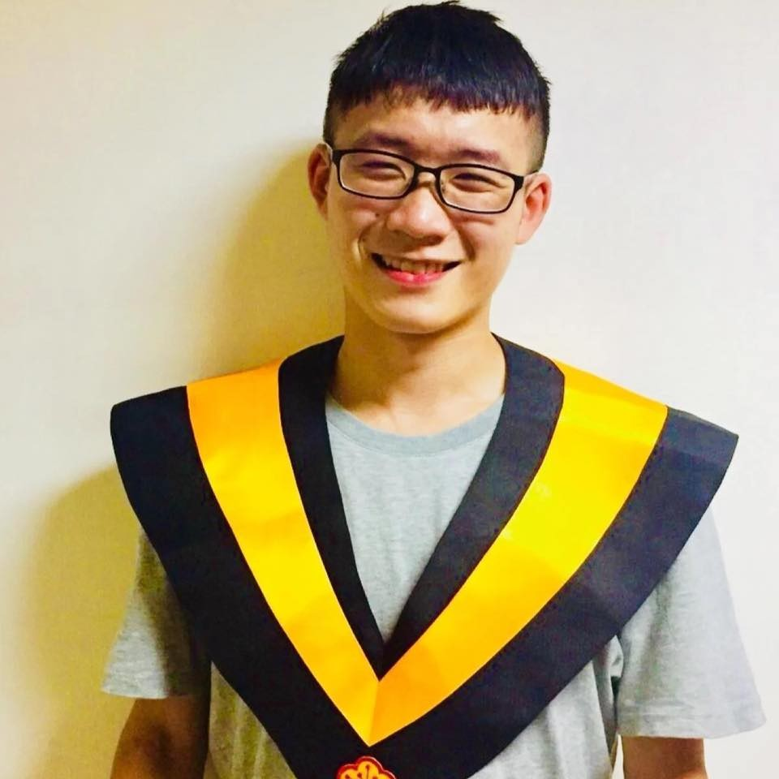
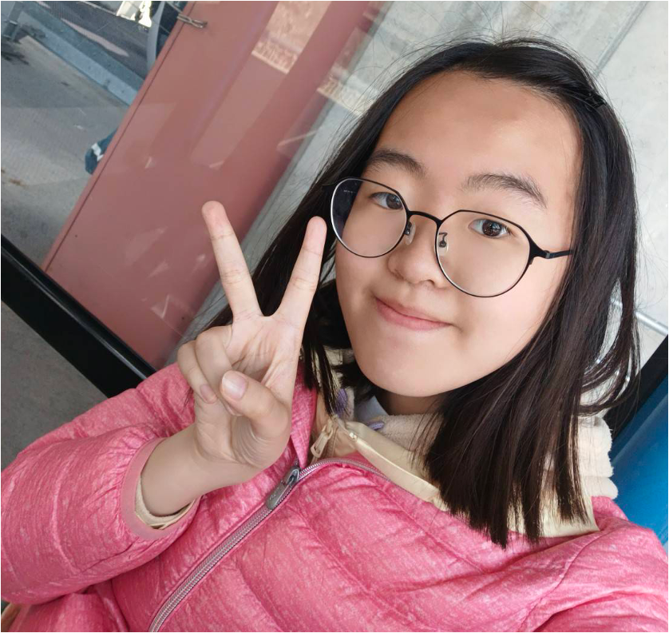

Collaborator
Yu-Chiung Lin

Ph.D. | Dept. of Physics, NTU
M.S. | Dept. of Astrophysics, NTU
Research Interests: Cosmology, Gravitational Waves, AI
Email: yuchiung.lin@mx.nthu.edu.tw
Collaborator
Ping-Hao Benson Bair
M.S. | Dept. of Computer Science, NUS
B.S.S. | Dept. of Business Administration, NTNU
Research Interests: LLM、NLP、Text Mining
Email: bensonb1108@gmail.com
Collaborator
Li-Heng Chen

M.S.| Dept. of Geography, NTU
M.S.| Dept. of Statistics, NTU
Research Interests: Spatiotemporal Data Science, MAUP, Classification Algorithm
Email: liheng.stat@gmail.com
Research Assistant
Ian, Po-Yu Yeh

Former RA | Dept. of Electrical Engineering, CalTech
Projects: Graph Neural Network for Urban Mobility
Research Interests: Cybersecurity AI, Cryptography & Financial Engineering
Email: ian920806@gmail.com
Research Assistant
Yen-En Chen

M.S. | MSc in Water Science, Policy and Management, University of Oxford
B.S. | Dept. of Geography, NTU
Projects: Spatiotemporal Pest Number Prediction Model
Research Interests: Water Science, Spatial Analysis, Machine Learning
Email: ian920806@gmail.com
1Y Grad. | NTU (RA)
Tzu-Cheng Chang

Grad. Student | Dept. of Geography, NTU
B.A.| Dept. of Geography, NTNU
Projects: Speed Camera in Road Safety
Research Interests: Spatial analysis, Remote Sensing, GeoAI
Email: 41023112L@ntnu.edu.tw
2Y Grad. | NYCU (Co-Advisor)
Tsai-Wei Chou

Grad. Student | Department of Transportation and Logistics Management, NYCU
Projects: Speed Camera in Road Safety
Research Interests: Graph Neural Network, Bus Bunching, Urban Transportation
Email: vivianchou0528@gmail.com
2Y Grad. | NTNU (Co-Advisor)
Yen-Yu Chen
Grad. Student | Dept. of Earth Sciences, NTNU
B.S.| Dept. of Earth Sciences, NTNU
Projects: The Impact of Climate Change on Mental Disease
Research Interests: Time Series Analysis, Mental Health, Air Pollution
Email: kathy90chen1002@gmail.com
1Y Grad. | NTU (Co-Advisor)
Pei-Shan Tsai
Grad. Student | Dept. of Earth Sciences, NTNU
B.S.| Dept. of Earth Sciences, NTNU
Projects: The Impact of Climate Change on Cardiovascular Disease
Research Interests: Time Series Analysis, Mental Health, Air Pollution
Email: saratsai1111@gmail.com
4Y Undergrad. | NTNU (RA)
Peng Hsiang Jen

Undergrad. Student | Dept. of Geography, NTNU
Projects: Carbon Emission Minimization for Urban Renewal
Research Interests: Agent-based Modeling, Spatial Statistics, Clinical Medical Analsysis
Email: melodym713jk@gmail.com
3Y Undergrad. | NTNU (RA)
Chia-Hsun Lee

Undergrad. Student | Dept. of Geography, NTNU
Projects: Developing a 3D Vehicle Trajectory Spatiotemporal Correction
Research Interests: TBU
Email: a0975148726@gmail.com
3Y Undergrad. | NTNU (RA)
Rou-Hsuan Shen

Undergrad. Student | Dept. of Geography, NTNU
Projects: Understanding the Impact of Amenities on Social Housing Neighborhood
Research Interests: TBU
Email: zoe1060186@gmail.com
3Y Undergrad. | NTNU (RA)
Shao-Hong Lai

Undergrad. Student | Dept. of Geography, NTNU
Projects: The Vulnerability Analysis of Global Submarine Cable Network
Research Interests: TBU
Email: laishaohong04@gmail.com
3Y | Taipei First Girls High School
Zhi-Wei Chen

Projects: Gravitational Wave Detection Via Deep Learning Approach
Research Interests: Artificial Intelligence, Gravitational Wave
Email: zhiwei.kiwwychen@gmail.com